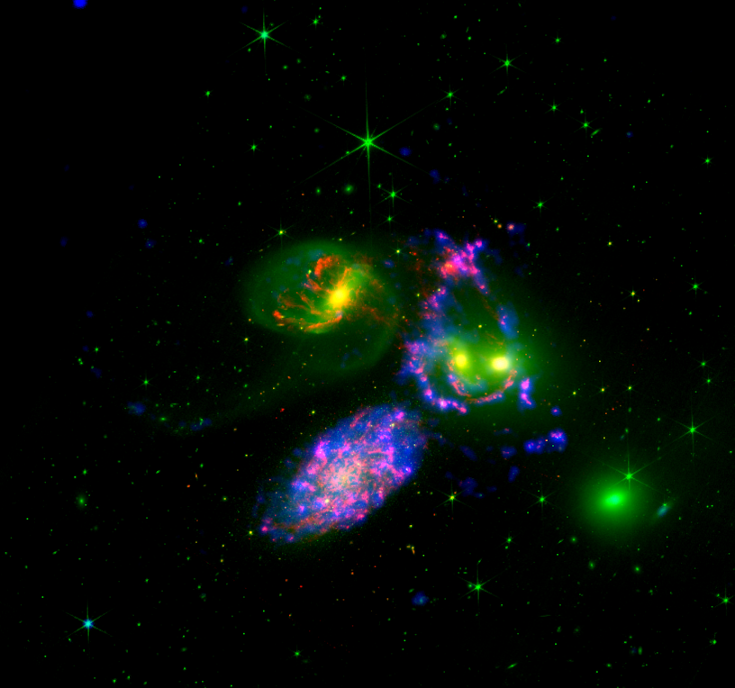

The RGB image shown below is created by assigning red (F200W band), green (F150W band) and blue (F148W+F169M band) colours to the filter pass band images.
The RGB image shown below is created by assigning red (F770W band), green (F200W band) and blue (F148W+F169M band) colours to the filter pass band images.
